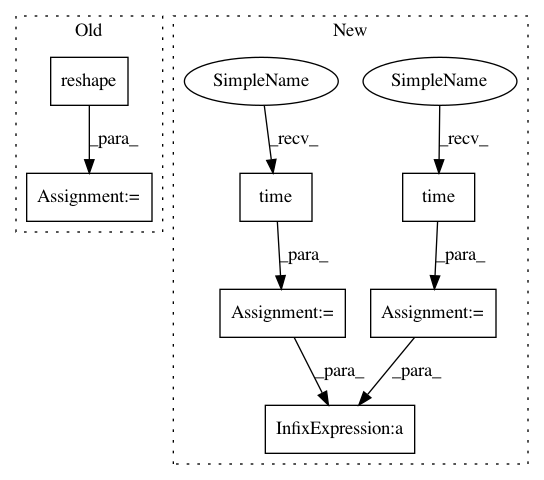

cfeef8cb854a24371f0ef5d7d9c68f23675c97ee,a2_multi_head_attention.py,,multi_head_attention_for_sentence_vectorized,#Any#,168
Before Change
embed_size=d_model
Embedding = tf.get_variable("Embedding_", shape=[vocab_size, embed_size],initializer=initializer)
input_x = tf.placeholder(tf.int32, [batch_size,sequence_length], name="input_x")
input_x_=tf.reshape(input_x,(batch_size*sequence_length,)) //[batch_size*sequence_length]
embedded_words = tf.nn.embedding_lookup(Embedding, input_x_) //[batch_size*sequence_length,embed_size]
with tf.variable_scope("query_at_each_sentence"+str(layer_number)):
Q = embedded_words // [batch_size*sequence_length,embed_size]
After Change
//vectorized implementation of multi head attention for sentences with batch
def multi_head_attention_for_sentence_vectorized(layer_number):
print("started...")
start = time.time()
// 1.set parameter
d_model = 512
d_k = 64
d_v = 64
sequence_length = 1000
h = 8
batch_size=128
initializer = tf.random_normal_initializer(stddev=0.1)
// 2.set Q,K,V
vocab_size=1000
embed_size=d_model
type="decoder"
Embedding = tf.get_variable("Embedding_", shape=[vocab_size, embed_size],initializer=initializer)
input_x = tf.placeholder(tf.int32, [batch_size,sequence_length], name="input_x")
embedded_words = tf.nn.embedding_lookup(Embedding, input_x) //[batch_size,sequence_length,embed_size]
mask=get_mask(batch_size,sequence_length) //tf.ones((batch_size,sequence_length))*-1e8 //[batch,sequence_length]
with tf.variable_scope("query_at_each_sentence"+str(layer_number)):
Q = embedded_words // [batch_size*sequence_length,embed_size]
K_s=embedded_words //[batch_size*sequence_length,embed_size]
V_s=tf.get_variable("V_s_original_", shape=embedded_words.get_shape().as_list(),initializer=initializer) //[batch_size,sequence_length,embed_size]
// 3.call method to get result
multi_head_attention_class = MultiHeadAttention(Q, K_s, V_s, d_model, d_k, d_v, sequence_length, h,type="decoder",mask=mask)
encoder_output=multi_head_attention_class.multi_head_attention_fn() //shape:[sequence_length,d_model]
encoder_output=tf.reshape(encoder_output,shape=(batch_size,sequence_length,d_model))
end = time.time()
print("input_x:",input_x)
print("encoder_output:",encoder_output,";time_spent:",(end-start))
def get_mask(batch_size,sequence_length):
lower_triangle=tf.matrix_band_part(tf.ones([sequence_length,sequence_length]),-1,0)
In pattern: SUPERPATTERN
Frequency: 3
Non-data size: 7
Instances
Project Name: brightmart/text_classification
Commit Name: cfeef8cb854a24371f0ef5d7d9c68f23675c97ee
Time: 2017-07-06
Author: brightmart@hotmail.com
File Name: a2_multi_head_attention.py
Class Name:
Method Name: multi_head_attention_for_sentence_vectorized
Project Name: brightmart/text_classification
Commit Name: cfeef8cb854a24371f0ef5d7d9c68f23675c97ee
Time: 2017-07-06
Author: brightmart@hotmail.com
File Name: a2_multi_head_attention.py
Class Name:
Method Name: multi_head_attention_for_sentence_vectorized
Project Name: ilastik/ilastik
Commit Name: fe073644f6a8f37e9ce57df903bf12b560690fc3
Time: 2012-09-14
Author: christoph.straehle@iwr.uni-heidelberg.de
File Name: lazyflow/operators/obsolete/classifierOperators.py
Class Name: OpPredictRandomForest
Method Name: execute
Project Name: brightmart/text_classification
Commit Name: cfeef8cb854a24371f0ef5d7d9c68f23675c97ee
Time: 2017-07-06
Author: brightmart@hotmail.com
File Name: a2_attention_between_enc_dec.py
Class Name:
Method Name: test